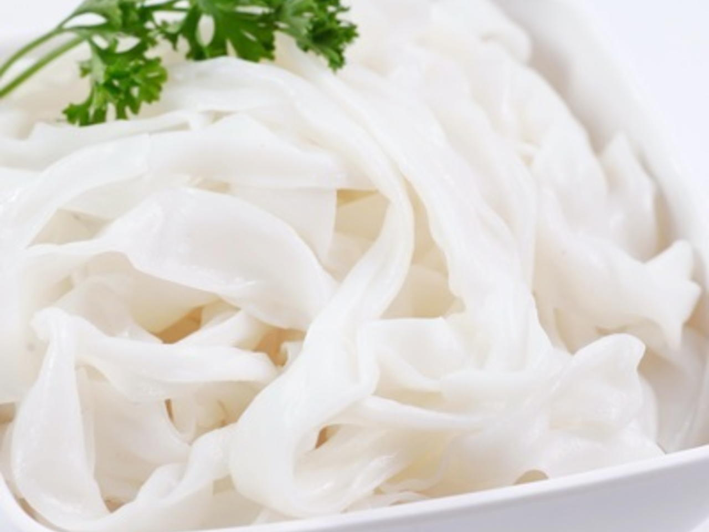
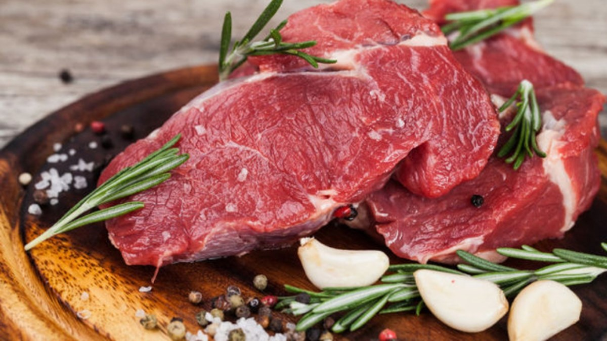
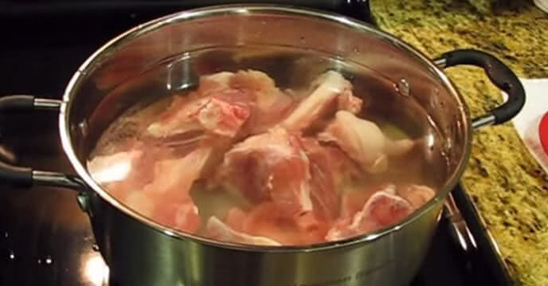
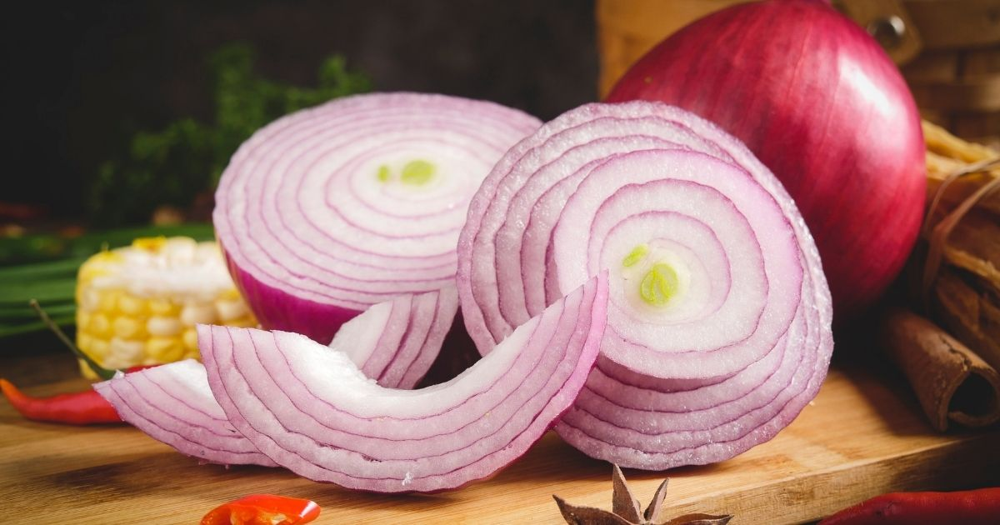
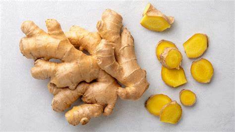

Nguyên Liệu

Bánh phở
500g

Thịt bò
300g (Thịt thăn bò hoặc gầu bò)

Xương bò
1kg

Hành tây
1 củ

Gừng
1 củ

Gia vị
Muối, nước mắm, tiêu, quế, hồi, thảo quả
Cách Chế Biến
- Rửa sạch xương bò, luộc sơ qua rồi hầm xương trong 4-6 giờ để lấy nước dùng.
- Nướng gừng và hành tây cho thơm, sau đó cho vào nồi nước dùng.
- Thêm gia vị như quế, hồi, thảo quả và nước mắm vào nước dùng để tạo mùi vị đặc trưng cho phở.
- Thịt bò thái mỏng, có thể trụng sơ qua nước sôi hoặc để tái khi chan nước dùng nóng.
- Luộc bánh phở rồi rửa qua nước lạnh và để ráo.
- Chia bánh phở vào tô, thêm thịt bò lên trên, sau đó chan nước dùng nóng lên.
- Ăn kèm với rau thơm, chanh, ớt và hành lá.